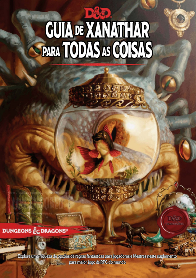

Guia de Xanathar para todas as coisas
Autor/Editora: Wizards of the Coast -
Sistema: primeiro grande suplemento de regras para a 5ª edição de D&D -
Sinopse
Guia de Xanathar sobre Tudo é o primeiro grande suplemento de regras para a 5ª edição de D&D, trazendo novas opções de jogo tanto para mestres quanto para jogadores sob a perspectiva cômica de um observador criminoso.
Avaliar este tomo:
★
★
★
★
★